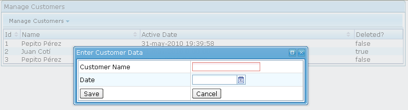

Sesión 6: Eventos y data binding
Eventos
Ciclo de vida
Hemos visto en la arquitectura de ZK que el módulo de cliente de ZK es un código JavaScript que reside en el cliente y es responsable de gestionar la interfaz de usuario. Cuando el usuario pulsa un botón o realiza una determinada acción que genera un evento, se invoca al servidor utiizando la tecnología Ajax. En el servidor se recibe el evento y se lanza el ciclo de vida de la actualización de páginas.
El motor de actualización de ZK realiza tres fases para procesar las peticiones de los clientes: la fase de procesamiento de la petición, la fase de procesamiento del evento y la fase de renderizado.
El motor de actualización encola las peticiones que vienen del mismo escritorio y se procesan de forma secuencial. Peticiones de distintos escritorios se procesan en paralelo.

Las fases son las siguientes:
- Fase de procesamiento de la petición: dependiendo de la petición, el motor de actualización de ZK podría actualizar el contenido de los componentes de forma que su contenido sea el mismo que se muestra en el cliente. Luego, lanza los eventos correspondientes a la cola.
- Fase de procesamiento del evento: se procesan los eventos uno por uno, cada un en un thread independiente. Para ello se lanza la función que hace de manejador del evento detectado.
- Fase de renderizado: después de que se han procesado los eventos, ZK renderiza los componentes afectados, genera las correspondientes respuestas, y envía las respuestas de vuelta al cliente. En el cliente, el motor de ZK actualiza el árbol DOM del navegador basándose en la respuesta. El que se haga un redibujado de todos los componentes o sólo de la parte que cambia depende de la implementación realizada por los desarrolladores de componentes.
Manejadores de eventos
Es posible escribir código de gestión de eventos en zscript o en código Java.
Un ejemplo de evento procesado en código zscript. EL código se evalúa cuando se pulsa el botón.
<window>
<button onClick='alert("here is a zcript")'/>
</window>
Para hacerlo más legible se puede utilizar attribute:
<window>
<button>
<attribute name="onClick">
alert("here is a zscript");
</attribute>
</button>
</window>
Otra forma más de hacerlo es escribir un método en zscript y llamarlo desde el evento:
<window>
<zscript>
public void showAlert(){
alert("here is a zcript too");
}
</zscript>
<button onClick="showAlert()"/>
</window>
Manejadores de eventos en Java
Para manejar eventos en Java tenemos también varias opciones. Podemos usar un método estático o utilizar los atributos zk use o apply.
Ejemplo con método estático:
<window> <button onClick="MyManager.showAlert()"/> </window>
Y la clase Java MyManager.java es:
import org.zkoss.zul.Messagebox;
import org.zkoss.zul.Window;
public class MyManager {
public static void showAlert(){
try {
Messagebox.show("handle event in java");
} catch (Exception e) {
e.printStackTrace();
}
}
}
El siguiente ejemplo usa el atributo zk use:
<window id="win_1" use="MyWindow"> <button onClick="win_1.showAlert()"/> </window>
import org.zkoss.zul.Messagebox;
import org.zkoss.zul.Window;
public class MyWindow extends Window {
public void showAlert(){
try {
Messagebox.show("handle event in java");
} catch (Exception e) {
e.printStackTrace();
}
}
}
Por último, el siguiente ejemplo usa el atributo zk apply. Hay que notar que el nombre del método que maneja los eventos debe ser onXXX.
<window apply="MyComposer"> <button forward="onShowAlert()"/> </window>
import org.zkoss.zk.ui.event.Event;
import org.zkoss.zk.ui.util.GenericComposer;
import org.zkoss.zul.Messagebox;
public class MyComposer extends GenericComposer {
public void onShowAlert(Event evt) {
try {
Messagebox.show("handle event in java");
} catch (Exception e) {
e.printStackTrace();
}
}
}
El atributo forward
El atributo ZK forward se utiliza para reenviar un evento capturado por un componente a otro componente. Si no se define el componente, quien recibe el nuevo evento es el propietario del espacio de identificadores. Es posible también modificar también el tipo de evento que se reenvía.
Tiene la siguiente sintaxis:
forward="original_event=target_event_expr" forward="target_event_expr"
El segundo formato asume que el evento original es onClick. Por ejemplo, las dos expresiones siguientes producen el mismo resultado, renombran el evento onClick como onOK y lo reenvían al propietario del espacio ID en el que reside el botón.
<button forward="onOK"/> <button forward="onClick=onOK"/>
Veamos un ejemplo de uso de esta técnica para implementar un controlador de la ventana que responde a eventos generados en sus botones.
En el fichero di-hola.zul se definen los componentes ZK. El atributo apply de la ventana indica la clase Java que va a gestionar los eventos que se lancen sobre la ventana. El atributo forward del botón hace los eventos del botón sean redirigidos al componente padre (la ventana en este caso).
<?page title="Di hola" contentType="text/html;charset=UTF-8"?> <zk> <window title="Di hola" border="normal" apply="controller.MiControlador"> <button label="Di hola" forward="onDiHola" /> </window> </zk>
En la clase Java controller.MiControlador se define un método público onDiHola con un parámetro de tipo Event en el que se recoge la información del evento. En este caso, se añade un componente hijo de tipo Label a la ventana que ha recibido el evento.
package controller;
import org.zkoss.zk.ui.util.GenericComposer;
import org.zkoss.zk.ui.event.Event;
import org.zkoss.zul.Label;
public class MiControlador extends GenericComposer {
private static final long serialVersionUID = 1L;
public void oDiHola(Event evt) {
evt.getTarget().appendChild(new Label("Hola"));
}
}
Es posible reenviar más de un evento separándolos entre comas:
<textbox forward="onChanging=onUpdating, onChange=some.onUpdate"/>
Especificando el evento en forward
La expresión que se utiliza para definir el evento que es reenviado puede tener uno de los siguiente formatos:
event-name
target-id.event-name
id1/id2/id3.event-name
${el-expr}.event-name
Vemos que se puede definir el componente al que se reenvía el evento. Por ejemplo, si queremos reenviar el evento onClick de un botón a una ventana en concreto podemos definir un identificador y usarlo en la expresión del evento:
<window id="w" use="MyWindow">
...
<button label="Submit" forward="onClick=w.onOK"/>
</window>
Después podemos manejar el evento en la clase MyWindow:
public class MyWindow extends Window {
public void onOK() {
//maneja el evento
}
}
Es posible también en la expresión del evento pasar datos utilizando una expresión EL. La información puede ser recuperada con el método getData de la clase ForwardEvent:
Por ejemplo, si definimos el evento enviado de la siguiente forma:
<button forward="onCancel(abort)"/>
El método getData devolverá la cadena "abort".
Podemos enviar el tipo de dato que queramos utilizando zscript y expresiones EL:
<window id="win" title="ZK app 6" apply="MyComposer">
<zscript><![CDATA[
Date now = new Date();
</zscript>
<button label="Say Hello" forward="onSayHello(${now})" />
</window>
El parámetro now es de tipo Date. Por ejemplo, en el controlador podemos guardarlo en un campo Date de los objetos del modelo o imprimirlo:
public class MyComposer extends GenericComposer {
public void onDiFecha(Event evt) {
Date fecha = (Date) evt.getData();
Locale locale = new Locale("es");
DateFormat formatter = new SimpleDateFormat("EEEE, d 'de' MMMM 'de' yyyy", locale);
String strFecha = formatter.format(fecha);
evt.getTarget().appendChild(new Label(strFecha));
}
}
También es posible utilizar expresiones EL para especificar el identificador o el path del componente al que se envía el evento:
<button forward='${mainWnd}.onOK(${c:getProperty("status")})'/>
Cómo utilizar variables en escuchadores de eventos
Un problema que sucede a menudo es que se intenta acceder desde los manejadores de eventos a variables definidas en la fase de creación de los componentes de la página. Esto no es posible, ya que ambas fases son distintas.
Por ejemplo, no es posible acceder a las variables forEach y each desde los escuchadores de eventos. El siguiente código no es correcto ya que cuando se llama al escuchador de onClick, la variable each no está disponible.
<window title="Countries" border="normal" width="100%">
<zscript><![CDATA[
String[] countries = {
"China", "France", "Germany", "United Kindom", "United States"};
]]></zscript>
<hbox>
<button label="${each}" forEach="${countries}"
onClick="alert(each)"/> <!-- incorrect!! -->
</hbox>
</window>
Las etiquetas de los botones se definen correctamente cuando se crean los componentes, pero la variable each ya no está disponible en el momento de procesar el evento y cuando se ejecuta el zscript. Es importante notar también que el código que se define en el evento onClick es código zscript y no una expresión EL.
¿Cómo solucionarlo? Una forma es almacenar el contenido de cada each en algún lugar que esté disponible cuando el evento se procese. Se puede almacenar donde queramos, pero una forma sencilla de hacerlo es la siguiente:
<window title="Personas" border="normal" width="100%">
<zscript><![CDATA[
import model.Persona;
ArrayList personas = new ArrayList();
Persona p1 = new Persona("Pepito", "Pérez", 30);
Persona p2 = new Persona("Isabel", "Gallego", 23);
Persona p3 = new Persona("Antonio", "Pomares", 24);
personas.add(p1);
personas.add(p2);
personas.add(p3);
void doAlert() {
Persona p = (Persona) self.getAttribute("persona");
String str = p.getNombre() + " " + p.getApellidos() + " " + p.getEdad();
alert(str);
}
]]></zscript>
<hbox>
<button label="${each.nombre}" forEach="${personas}"
onClick="doAlert()">
<custom-attributes persona="${each}"/>
</button>
</hbox>
</window>
Podemos definir un atributo custom country y darle el valor de la etiqueta each. Después podemos utilizar el método getAttribute (estamos usando zscript) para recuperar el valor del atributo.
Data Binding
Uno de los aspectos más importantes del patrón MVC es que la vista y el modelo deben estar conectados de alguna manera. Tanto la visualización como la actualización del modelo deben ser lo más sencillas posibles. Hemos visto que ZK permite utilizar expresiones EL para mostrar el contenido de JavaBeans. Pero por ahora no hemos visto ninguna forma de actualizarlos. Vamos a ver a continuación el mecanismo de data binding que permite esto.
El mecanismo de data binding permite conectar los elementos de la vista con los datos que mantienen la aplicación. De una forma sencilla podemos ligar valores componentes con campos de objetos JavaBean. El mecanismo se encarga directamente de leer los campos y pintarlos en la interfaz así como de actualizarlos cuando son modificados en ella.
El modelo
El modelo es una clase JavaBean con sus campos, sus getters y sus setters. Un ejemplo es la siguiente clase Person.java:
public class Person {
private String firstName = "";
private String lastName = "";
// getter y setters
public void setFirstName(String firstName) {
this.firstName = firstName;
}
public String getFirstName() {
return firstName;
}
public void setLastName(String lastName) {
this.lastName = lastName;
}
public String getLastName() {
return lastName;
}
public void setFullName(String fullName) {
// no hacemos nada
}
public String getFullName() {
return firstName + " " + lastName;
}
}
Asociación entre componentes y JavaBeans
En primer lugar debemos activar el gestor de data binding definiéndolo en la declaración de inicialización de la página:
<?init class="org.zkoss.zkplus.databind.AnnotateDataBinderInit" ?>
Esto hace lo siguiente:
- Crea una instancia de la clase AnnotateDataBinder y le da el nombre de variable binder.
- Llama al método DataBinder.loadAll() para inicializar todos los atributos de los componentes a partir de los JavaBeans.
Para asociar los objetos de la interfaz al JavaBean debemos utilizar la siguiente sintaxis:
<component-name attribute-name="@{bean-name.bean-property}"/>
- component-name representa un componente de la interfaz de usuario
- attribute-name representa un atributo del elemento
- bean-name es la variable que referencia el JavaBean
- bean-property es una propiedad del JavaBean
Vamos a ver un ejemplo en el que utilizamos un componente de tipo Grid y lo asociamos con un JavaBean Person que creamos en zscript:
<?init class="org.zkoss.zkplus.databind.AnnotateDataBinderInit" ?>
<window>
<zscript>
Person person = new Person();
person.setFirstName("Albert");
person.setLastName("Einstein");
</zscript>
<grid width="400px">
<rows>
<row> First Name: <textbox value="@{person.firstName}"/></row>
<row> Last Name: <textbox value="@{person.lastName}"/></row>
<row> Full Name: <label value="@{person.fullName}"/></row>
</rows>
</grid>
</window>
Cómo actualizar los datos del JavaBean
La conexión entre el JavaBean y el componente no es automática (como sucede en JSF, por ejemplo), sino que hay que definir explícitamente cuando queremos que se guarden los datos de la interfaz en el JavaBean. Debemos asociarlo con algún evento, utilizando la anotación save-when:
<component-name attribute-name="@{bean-name.attribute-name,
save-when='component-id.event-name'}"/>
Por ejemplo, podemos asociar los datos de la persona con campos de texto y ligar su actualización al evento onChange. Vamos también a cambiar el tipo de componente y utilizar un listbox en lugar de un grid:
<?init class="org.zkoss.zkplus.databind.AnnotateDataBinderInit"?>
<window width="500px">
<zscript><![CDATA[
Person person = new Person();
person.setFirstName("Albert");
person.setLastName("Einstein");
]]><![CDATA[</zscrip>
<listbox>
<listhead>
<listheader label="First Name" width="100px"/>
<listheader label="Last Name" width="100px"/>
<listheader label="Full Name" width="100px"/>
</listhead>
<listitem>
<listcell>
<textbox id="firstName" value="@{person.firstName, save-when='self.onChange'}"/>
</listcell>
<listcell>
<textbox id="lastName" value="@{person.lastName, save-when='self.onChange'}"/>
</listcell>
<listcell label="@{person.fullName}"/>
</listitem>
</listbox>
</window>
Después de construidos los componentes en la fase de carga de la página, es necesario definir explícitamente cuándo queremos que se actualicen a partir de los datos del JavaBean. Para ello debemos utilizar la anotación load-when y relacionarla con un evento:
<component-name attribute-name="@{bean-name.attribute-name,
load-when='component-id.event-name'}"/>
Modificamos el ejemplo para que el nombre completo se cargue del JavaBean cuando se modifique cualquiera de los otros atributos. Para ello utilizamos el evento onChange
<listcell label="@{person.fullName
load-when='firstName.onChange,lastName.onChange'}"/>
Por defecto los datos están ligados a estos eventos si no explicitamos ningún evento. De esta forma sólo con el primer ejemplo bastaría para definir una interfaz que actualizara los datos de la persona.
Cómo hacer el binding de una colección
Muy a menudo necesitamos mostrar y actualizar colecciones de elementos. Podemos hacerlo ligando el atributo model de un componente con el objeto colección que queremos mostrar. El componente puede ser alguno de los que permite listar elementos bajo él: Listbox, Grid o Tree.
Para trabajar con bindings de colecciones debemos asociar la colección con el atributo model del componente que muestra la colección. Después podemos iterar por los elementos de la colección utilizando el atributo each y ligándolo al componente hijo (un listitem, row o treeitem).
El siguiente ejemplo muestra cómo definir este binding:
<?init class="org.zkoss.zkplus.databind.AnnotateDataBinderInit"?>
<window width="500px">
<zscript><![CDATA[
//prepare the example persons List
int count = 30;
List persons = new ArrayList();
for(int j= 0; j < count; ++j) {
Person personx = new Person();
personx.setFirstName("Tom"+j);
personx.setLastName("Hanks"+j);
persons.add(personx);
}
]]></zscript>
<listbox rows="4" model="@{persons}">
<listhead>
<listheader label="First Name" width="100px" />
<listheader label="Last Name" width="100px" />
<listheader label="Full Name" width="100px" />
</listhead>
<!-- define variable person here-->
<listitem self="@{each='person'}">
<listcell>
<textbox value="@{person.firstName}" />
</listcell>
<listcell>
<textbox value="@{person.lastName}" />
</listcell>
<listcell label="@{person.fullName}" />
</listitem>
</listbox>
</window>
Cómo asociar el mismo JavaBean con múltiples componentes
Es posible asociar el mismo JavaBean con más de un componente de la IU. Por ejemplo, podemos modificar el ejemplo anterior añadiendo la variable zscript selected de tipo Person que ligamos con la fila seleccionada. Podemos usar esa misma variable en otro componente:
Modificamos el ejemplo anterior, sustituyendo el componente textbox del listitem por un label y añadimos una nueva variable que referencia el ítem seleccionado ligada a un nuevo campo de texto:
<?xml version="1.0" encoding="UTF-8"?>
<?init class="org.zkoss.zkplus.databind.AnnotateDataBinderInit"?>
<window width="500px">
<zscript><![CDATA[
...
Person selected;
...
</zscript>
<listbox rows="10" model="@{persons}" selectedItem="@{selected}">
<listhead>
<listheader label="First Name" width="100px" />
<listheader label="Last Name" width="100px" />
<listheader label="Full Name" width="100px" />
</listhead>
<!-- define variable person here-->
<listitem self="@{each='person'}">
<listcell>
<label value="@{person.firstName}" />
</listcell>
<listcell>
<label value="@{person.lastName'}" />
</listcell>
<listcell label="@{person.fullName}" />
</listitem>
</listbox>
<!-- show the detail of the selected person -->
<grid>
<rows>
<row>
First Name:
<textbox value="@{selected.firstName}" />
</row>
<row>
Last Name:
<textbox value="@{selected.lastName}" />
</row>
</rows>
</grid>
</window>
Como modificar el contenido de un listbox utilizando el atributo model
Es posible modificar el contenido de un listbox actualizado la lista que guarda en el atributo model. Pero es muy importante obtener la lista utilizando el método getModel del objeto listbox. No basta con modificar la colección original que pasamos al listbox.
Como ejemplo, supongamos que queremos añadir nuevos elementos a la colección de personas del ejemplo anterior. Definimos un nuevo botón Añadir que realiza esta acción. En algún ejemplo de otra sesión esta acción de añadir se hace en dos pasos: se añade el dato a la colección y se actualizan los elementos del listbox. El atributo model, sin embargo, permite hacer las dos cosas al mismo tiempo. Si modificamos la lista que devuelve el método getModel automáticamente se actualiza el modelo y la vista.
El código de la función add() es el siguiente:
void doAdd() {
Person p = new Person();
p.setFirstName("Tom" + persons.size());
p.setLastName("Hanks" + persons.size());
List personas = lista.getModel();
personas.add(p);
}
Podemos hacer algo similar para borrar el ítem seleccionado. La siguiente función recorre toda la lista de personas y borra los que tienen el mismo nombre.
void doDelete(Person person) {
List personas = lista.getModel();
for (int i = 0; i < personas.size(); i++) {
Person p = (Person) personas.get(i);
if (p.getFirstName().equals(person.getFirstName())){
personas.remove(i);
i--;
}
}
}
Si probamos a añadir un botón que llame a la función vemos que se borra la persona seleccionada tanto de la lista original como del listbox. El objeto personas que devuelve el método getModel es de la clase ListModel. Esta clase implementa la interfaz List ocupándose también de mantener la lista original y el listbox.
Conversión entre los datos y la interfaz
Cuando hacemos un data binding es posible también especificar los métodos que convierten los objetos Java en componentes de la interfaz. Normalmente, estos componentes de la interfaz van a ser cadenas o imágenes. Para realizar la conversión, debemos definir el atributo converter:
<component-name attribute-name="@{bean-name.attribute- name,converter='class-name'}"/>
En la expresión se referencia una clase Java que debe implementar la interfaz TypeConverter en la que se deben definer los métodos coerceToBean y coerceToUI.
Por ejemplo, el siguiente método pinta un booleano (true o false) con un par de imágenes (/img/true.png y /img/false.png:
import org.zkoss.zkplus.databind.TypeConverter;
import org.zkoss.zul.Listcell;
public class myTypeConverter implements TypeConverter {
public Object coerceToBean(java.lang.Object val,
org.zkoss.zk.ui.Component comp) {
return null;
}
public Object coerceToUi(java.lang.Object val,
org.zkoss.zk.ui.Component comp) {
boolean married = (Boolean) val;
if (married)
((Listcell) comp).setImage("/img/true.png");
else
((Listcell) comp).setImage("/img/false.png");
return null;
}
}]
Un ejemplo de uso:
<?init class="org.zkoss.zkplus.databind.AnnotateDataBinderInit"?>
<window width="500px">
<zscript><![CDATA[
//prepare the example persons List
List persons = new ArrayList();
persons.add(new Person("Tom", "Yeh", true));
persons.add(new Person("Henri", "Chen", true));
persons.add(new Person("Jumper", "Chen", false));
persons.add(new Person("Robbie", "Cheng", false));
]]></zscript>
<listbox rows="4" model="@{persons}">
<listhead>
<listheader label="First Name" width="100px" />
<listheader label="Last Name" width="100px" />
<listheader label="Married" width="100px" />
</listhead>
<listitem self="@{each=person}">
<listcell label="@{person.firstName}" />
<listcell label="@{person.lastName}" />
<listcell
label="@{person.married, converter='myTypeConverter'}" />
</listitem>
</listbox>
</window>
Una aplicación completa
Vamos a ver un ejemplo completo en el que trabajamos con una lista de datos y podemos añadir y modificar elementos (clientes). El aspecto de la aplicación es el siguiente:

Código Java
En la clase model.Customer definimos el JavaBean que hace de modelo de los datos de la aplicación. Definimos sus atributos:
package model;
import java.util.Date;
public class Customer {
private int id=0;
private String name;
private Date date;
private boolean deleted;
Los constructores y los getters y setters:
public Customer() {
}
public Customer(int id, String name, Date date, boolean deleted) {
this.id = id;
this.name = name;
this.date = date;
this.deleted = deleted;
}
public String getName() {
return name;
}
public void setName(String name) {
this.name = name;
}
public int getId() {
return id;
}
public void setId(int id) {
this.id = id;
}
public Date getDate() {
return date;
}
public void setDate(Date date) {
this.date = date;
}
public void setDeleted(boolean deleted) {
this.deleted = deleted;
}
public boolean getDeleted() {
return deleted;
}
Y un método especial que nos sirve para construir un JavaBean idéntico al actual:
// copia (clonado) de un customer
public Customer copy() {
Customer copy = new Customer();
copy.setId(this.getId());
copy.setName(this.getName());
copy.setDate(this.getDate());
copy.setDeleted(this.getDeleted());
return copy;
}
}
Definimos una clase DAO model.CutomerDao para gestionar el acceso a una supuesta base de datos en la que guardamos todos los clientes. Por simplificar, vamos a utilizar una colección en memoria en la que guardamos todos los clientes, definida en el atributo customers del singleton MyCustomerSingleton.
package model;
import java.util.ArrayList;
import java.util.Iterator;
import java.util.List;
import model.Customer;
public class CustomerDao {
MyCustomersSingleton model;
public CustomerDao() {
model = MyCustomersSingleton.getInstance();
}
Definimos el método privado find para obtener un cliente a partir de su identificador que utilizaremos en varias partes del código. Obtenemos la colección con el método getCustomers(). Definimos el método público getCustomer que toma como parámetro una cadena:
/**
* @param id El identificador del cliente
* @return El objeto cliente del ArrayList, null si no existe
*/
private Customer findCustomer(int id) {
List<Customer> customers = model.getCustomers();
Customer foundCustomer = null;
for (Customer cust : customers)
if (cust.getId() == id)
foundCustomer = cust;
return foundCustomer;
}
public Customer getCustomer(String strId) throws Exception {
Customer foundCustomer;
int id = Integer.parseInt(strId);
foundCustomer = this.findCustomer(id);
if (foundCustomer == null) {
throw new RuntimeException("No existe cliente " + id);
} else
return foundCustomer.copy();
}
Definimos el método getAllCustomers que copia todos los clientes en un array que devuelve como resultado.
public List<Customer> getAllCustomers() {
ArrayList<Customer> allCustomers = new ArrayList<Customer>();
for (Iterator<Customer> iterator = model.getCustomers()
.iterator(); iterator.hasNext();) {
Customer customer = (Customer) iterator.next();
allCustomers.add(customer.copy());
}
return allCustomers;
}
Definimos el método addCustomer() que añade un cliente nuevo a la colección. El identificador del cliente es autogenerado.
public int getCustomerCount() {
return model.getCustomers().size();
}
public void addCustomer(Customer customer) throws Exception {
List<Customer> customers = model.getCustomers();
if (findCustomer(customer.getId()) == null) {
Customer cust = customer.copy();
int id = model.getLastCustomId()+1;
cust.setId(id);
model.setLastCustomId(id);
customers.add(cust);
}
else
throw new RuntimeException("Ya existe el cliente"
+ customer.getId());
}
Por último definimos el método updateCustomer para actualizar los datos de un cliente.
public void updateCustomer(Customer customer)
throws Exception {
Customer foundCustomer;
foundCustomer = findCustomer(customer.getId());
if (foundCustomer == null) {
throw new RuntimeException("No existe cliente "
+ customer.getId());
} else {
foundCustomer.setName(customer.getName());
foundCustomer.setDate(customer.getDate());
foundCustomer.setDeleted(customer.getDeleted());
}
}
}
La clase model.MyCustomersSingleton define el singleton que hace el papel de variable global de la aplicación en la que guardamos la colección de clientes y el último identificador autogenerado:
package model;
import java.util.ArrayList;
import java.util.Date;
import java.util.List;
public class MyCustomersSingleton {
private static MyCustomersSingleton instance = null;
List<Customer> customers;
int lastCustomId;
public static MyCustomersSingleton getInstance() {
if (instance == null) {
instance = new MyCustomersSingleton();
ArrayList<Customer> customers = new ArrayList<Customer>();
customers.add(new Customer(1, "Pepito Pérez", new Date(), false));
customers.add(new Customer(2, "Juan Cotinos", new Date(), false));
instance.setMyCustomers(customers);
instance.setLastCustomId(2);
}
return instance;
}
public void setMyCustomers(List<Customer> customers) {
this.customers = customers;
}
public List<Customer> getCustomers() {
return this.customers;
}
public int getLastCustomId() {
return lastCustomId;
}
public void setLastCustomId(int lastCustomId) {
this.lastCustomId = lastCustomId;
}
}
Código ZUML
Definimos el fichero index.zul en el que construimos la página principal con un menú y una lista de clientes:
<?page id="manageCust" title="Manage Customers" cacheable="false"
language="xul/html" zscriptLanguage="Java" contentType="text/html;charset=UTF-8"?>
<?init class="org.zkoss.zkplus.databind.AnnotateDataBinderInit"?>
<zk>
<zscript><![CDATA[
import model.*;
CustomerDao custDao = new CustomerDao();
myList = custDao.getAllCustomers();
public void submit() {
List myList;
CustomerDao custDao = new CustomerDao();
myList = custDao.getAllCustomers();
}
public void showEdit(String custId) throws Exception {
Map args = new HashMap();
args.put("custId", custId);
Window win = (Window) Executions.createComponents("editCustomer.zul", null, args);
win.setAttribute("custId", custId);
win.setTitle("Enter Customer Data");
win.setClosable(true);
win.setMaximizable(true);
win.doModal();
}
public void addNew() throws Exception {
Window win = (Window) Executions.createComponents("addCustomer.zul", null,
null);
win.setTitle("Enter Customer Data");
win.setClosable(true);
win.setMaximizable(true);
win.doModal();
}
]]></zscript>
<window id="win" border="normal" width="810px" minheight="300">
<caption label="Manage Customers" />
<borderlayout height="30px">
<north border="none">
<menubar id="menubar" width="800px">
<menu label="Manage Customers">
<menupopup>
<menuitem label="Register New Customer" onClick="addNew()"/>
<menuseparator />
<menuitem label="Exit"
onClick="win.detach()" />
</menupopup>
</menu>
</menubar>
</north>
</borderlayout>
<vbox>
<listbox id="customerList" model="@{myList}" mold="paging" pageSize="5"
width="800px">
<listhead sizable="true">
<listheader label="Id" sort="auto(id)"/>
<listheader label="Name" sort="auto(name)"/>
<listheader label="Active Date" sort="auto(date)"/>
<listheader label="Deleted?" />
</listhead>
<listitem self="@{each=myList}" onClick="showEdit(self.getLabel())">
<listcell label="@{myList.id}" />
<listcell label="@{myList.name}" />
<listcell label="@{myList.date}" />
<listcell label="@{myList.deleted}"/>
</listitem>
</listbox>
</vbox>
</window>
</zk>
La página editCustomer.zul permite editar un cliente seleccionado:
<?page title="Edit Customer" contentType="text/html;charset=UTF-8"?>
<zk>
<window id="editCustomerWin" title="Edit Customer" border="normal">
<zscript><![CDATA[
import model.*;
CustomerDao custDao = new CustomerDao();
String customerId = (String)Executions.getCurrent().getArg().get("custId");
Customer cust = custDao.getCustomer(customerId);
public void submit() throws Exception {
int l_custId = Integer.valueOf(myCustId.getValue());
Customer cust = new Customer();
cust.setId(l_custId);
cust.setName(customerName.getValue());
cust.setDate(new java.sql.Date(date.getValue().getTime()));
cust.setDeleted(deleted.isChecked());
CustomerDao custDao = new CustomerDao();
custDao.updateCustomer(cust);
Executions.getCurrent().sendRedirect("index.zul");
editCustomerWin.detach();
}
]]></zscript>
<grid fixedLayout="true" width="450px">
<rows>
<row>
<label value="Customer Name"/>
<textbox id="customerName" constraint="no empty" value="${cust.name }"/>
</row>
<row>
<label value="Date"/>
<datebox id="date" constraint="no empty" value = "${cust.date }"/>
</row>
<row>
<textbox id="myCustId" visible="false" value="${cust.id }"/>
</row>
<row>
<label value="Delete?"/>
<hbox>
<checkbox id="deleted" name="deleted" checked="${cust.deleted}"/>
<label value="whats this?" style="font:9;cursor:help;valign:center"
popup="help"/>
</hbox>
<popup id="help" width="400px">
<html>Checking this box will enable soft delete of the record.</html>
</popup>
</row>
<row>
<button label="Save" onClick="submit()"/>
<button label="Cancel" onClick="editCustomerWin.detach()"/>
</row>
</rows>
</grid>
</window>
</zk>
La página addCustomer.zul permite añadir un nuvo cliente:
<?page title="Add Customer" contentType="text/html;charset=UTF-8"?>
<zk>
<window id="addCustomerWin" title="Register New Customer"
border="normal">
<zscript><![CDATA[
import model.*;
void submit() throws Exception {
Customer cust = new Customer();
cust.setName(customerName.getValue());
java.util.Date utilDate = date.getValue();
cust.setDate(utilDate);
CustomerDao customerDao = new CustomerDao();
customerDao.addCustomer(cust);
Executions.getCurrent().sendRedirect("index.zul");
addCustomerWin.detach();
}
]]></zscript>
<grid fixedLayout="true" width="450px">
<rows>
<row>
<label value="Customer Name" />
<textbox id="customerName" constraint="no empty" />
</row>
<row>
<label value="Date" />
<datebox id="date" constraint="no empty"/>
</row>
<row>
<button label="Save" onClick="submit()" />
<button label="Cancel"
onClick="addCustomerWin.detach()" />
</row>
</rows>
</grid>
</window>
Ejercicio
Añadir una columna adicional con un botón "Borrar" que realiza un borrado real del cliente. Antes de realizar el borrado se debe pedir confirmación.